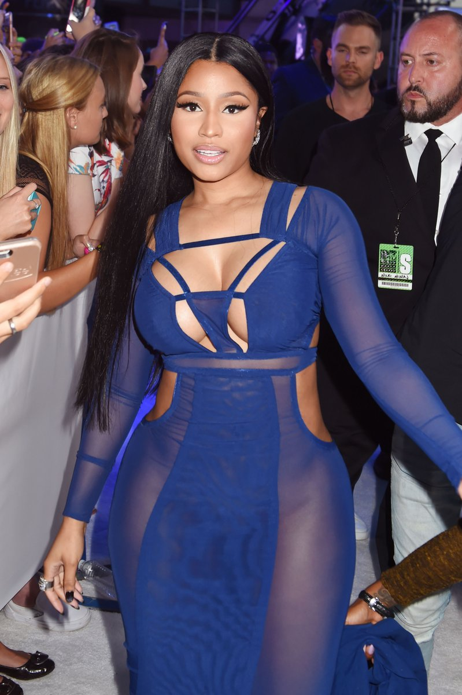
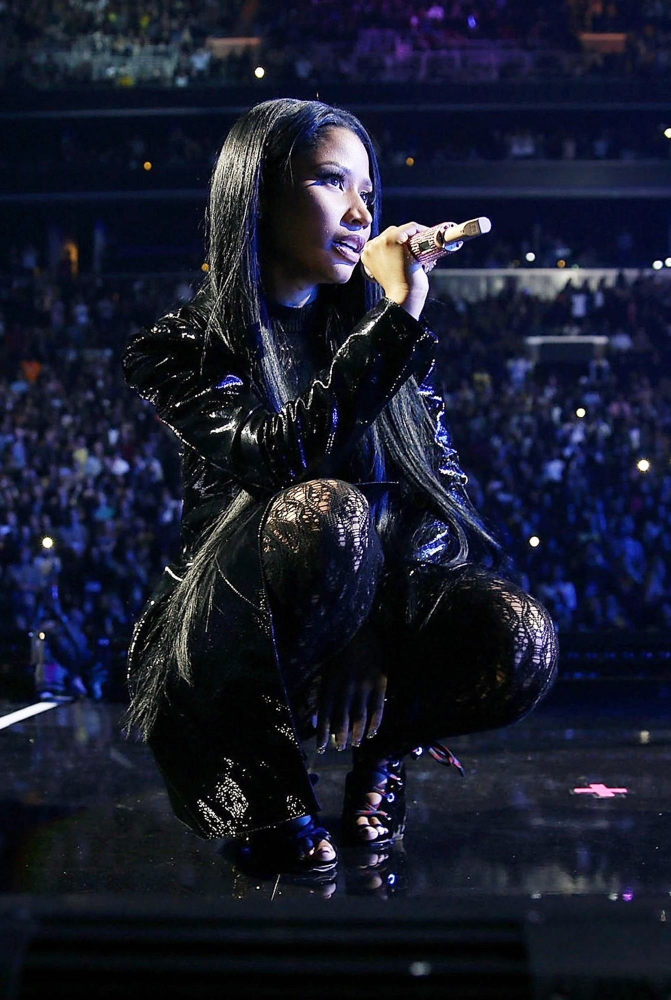
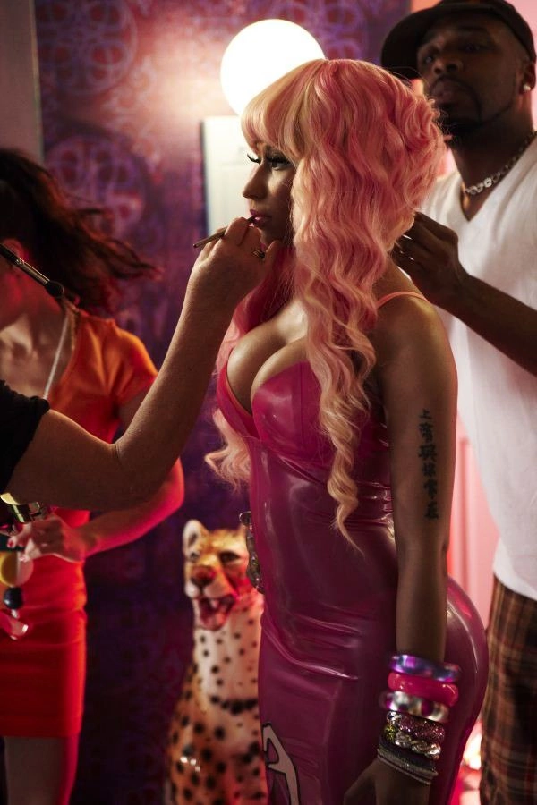
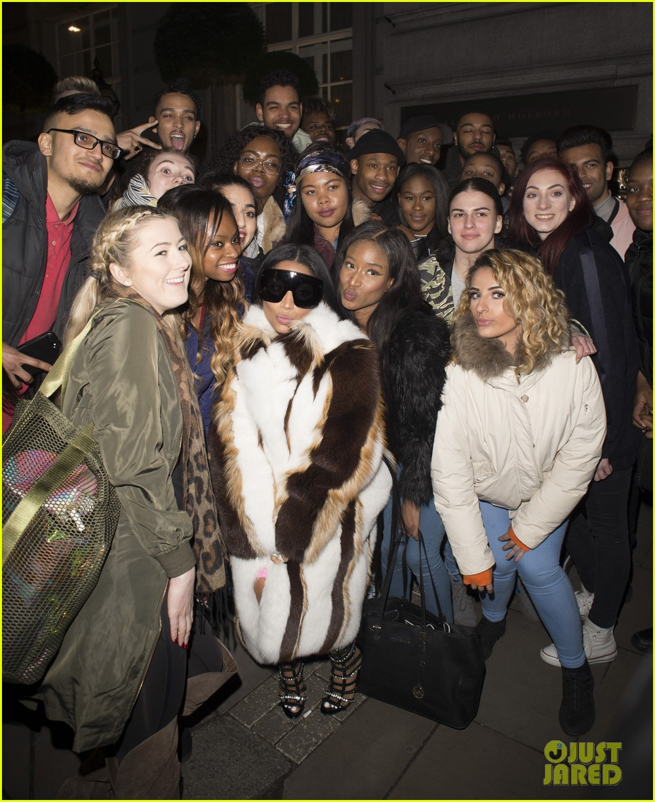
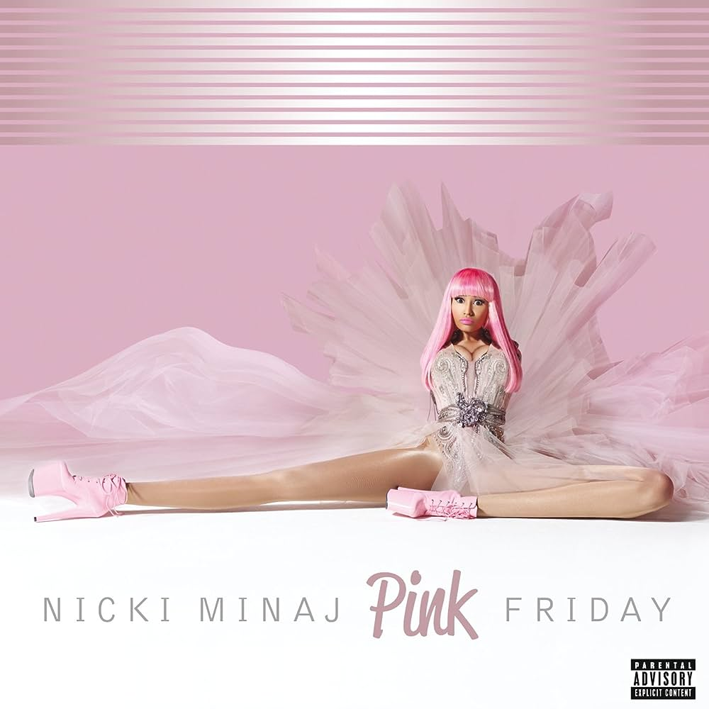

"Nicki Minaj: The Artistry of Rap
Nicki Minaj's journey to fame is as inspiring as her music is empowering. Before her breakthrough with "Pink Friday," she gained recognition through a series of mixtapes that showcased her exceptional skills as a rapper. These mixtapes, like "Playtime Is Over," "Sucka Free," and "Beam Me Up Scotty," revealed her lyrical prowess and versatility, earning her a dedicated fanbase even before her mainstream success.
What sets Nicki apart is her unwavering confidence and fearlessness. In an industry often dominated by men, she fearlessly carved her niche, proving that gender is no barrier to success. Her lyrics are not just catchy; they are messages of empowerment, urging listeners to embrace their individuality and stand up against societal norms. Nicki Minaj embodies strength, encouraging girls worldwide to pursue their dreams with determination and self-assurance.
Beyond her music, Nicki ventured into acting, gracing both the big and small screens with her talent. Her ability to seamlessly transition between roles illustrates her versatility as an artist. She serves as a role model, especially for young girls, showcasing that with talent, hard work, and confidence, one can achieve greatness.
Nicki Minaj's impact on the music world is immeasurable. Her fusion of talent, confidence, and fearlessness continues to inspire generations, making her a trailblazer in the industry. Through her music and persona, she not only entertains but also empowers, leaving an indelible mark on the hearts and minds of her fans worldwide
    